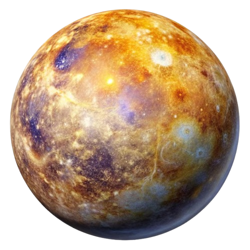

العطارد هو الكوكب الأقرب إلى الشمس وأصغر كواكب النظام الشمسي. يتميز بسطحه الصخري والمجعد، ويحتوي على فوهات صدمية.
درجات الحرارة فيه متطرفة، تصل إلى 430 درجة مئوية خلال النهار وتنخفض إلى -180 درجة مئوية ليلاً. يدور حول الشمس في مدار يستغرق حوالي 88 يومًا أرضيًا. لا يمتلك غلافًا جويًا كثيفًا، مما يجعله عرضة للتقلبات الحرارية.
